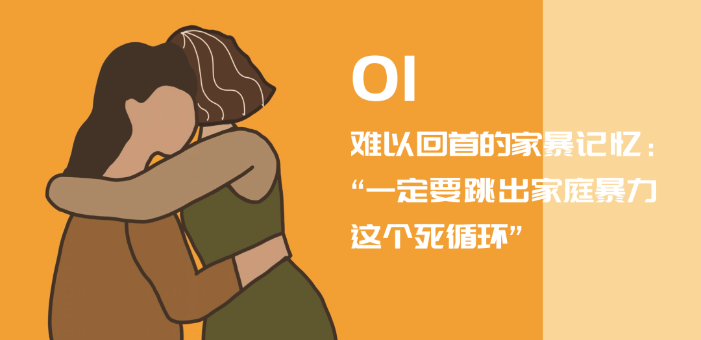

Confronting the "scars" of the past and encouraging women to speak out together - Sally's story of "chasing the light"

"For domestic violence, it is zero times or thousands of times."
Everyone knows this saying, but few people can get out of the mire of domestic violence.
In this era featuring information overload, it is hard to believe there are few platforms that speak up for victims of domestic violence. We should pay more attention to how can victims of domestic violence face their difficulties, defend their rights and get out of the nightmare of domestic violence, especially when they have to take their families and friends into consideration and the public has stereotypes about Chinese women.
We have therefore interviewed some of the women who have experienced domestic violence in an attempt to tell their stories in writing, hoping to pass on their remarkable courage to others in similar situations.
As a well-educated Chinese woman living in the Netherlands, Sally was financially and emotionally independent, and yet failed to escape domestic violence.

---It has been almost two years since her divorce. However, she still remembers the images of the past that flash through her mind from time to time, she can’t forget that her son, under seven years old then, once looked at her with big, shining eyes and asked gently, "Mommy, why did Daddy call you a thief?"
A thief? That is ridiculous. How could a woman who has a stable job with a decent income be a thief?
This is just an example of how Sally’s ex-husband and ex-mother-in-law distorted the truth, slandered the boy’s mother, and placed all sorts of accusations on her.
"At that time my son was not yet seven years old, which was an important period of his development. So I tried my best to care for him."
"However, due to him(Sally's ex-husband), my son was becoming more and more sensitive and less willing to trust others."
According to Sally, her ex-husband has been keenly aware of how the lack of a father’s care would take a toll on a child, as his parents were divorced and lived with his single mother.
He vowed that he would shoulder the duty of caring for his family and accompanying his child as he grows, instead of being an irresponsible father like his own father.
However, when his child was only 4, Sally’s ex-husband disregarded his family and went to Hongkong for another woman.
"Ironically, in the end, he became the person who he once loathed the most, like his father", Sally said.
She also mentioned that her ex-husband was longing to completely control the family, which, in his mind, was more important than being a reliable husband and father.
Once he felt threatened, he went crazy and had aggressive behaviors.
"When he was frustrated at his work or salary, he often vented his grievance by abusing his wife."
Sally suffered domestic violence twice. Once her head was injured during her water breaking in labour, and once his ex-husband didn't apply for his Chinese visa in time, which erupted into a family argument that led to domestic violence. After that, she realized she should leave to cut the loss.
Domestic violence is like an endless loop that physical violence leads to psychological trauma, which makes the victims lose the courage to resist.
Domestic violence happens more with immigrant women. Studies have shown that in New York, an immigrant wife is 2-3 times more likely to be a victim of violence than a native woman.
It is easier for Sally to be friends with women with similar experiences because they can understand and help each other. She told us a story of one of her friends who is also a Chinese woman living in the Netherlands with a Dutch ex-husband.
As a full-time housewife, she took good care of her child and husband, although she was not well educated. However, she was not rewarded with love. What’s worse, she was subjected to domestic violence. She was black and blue all over, in torment. What’s more, her ex-husband imprisoned her in their home, hid her passport and took her mobile phone away to stopped her from leaving the Netherlands.
She endured years of abuse for her child who was her only light in the darkness.
When her child was about 2 years old, she couldn't take it anymore and wanted to get a divorce, but she failed to get effective supports due to the language barrier. Fortunately, she finally got rid of her evil ex-husband with the assistance of organizations for Chinese and children protection.
However, she had to relinquish custody of her child because of financial disadvantage, language barrier, and her ex-husband being deliberately obstructive.
Many Chinese women drowning in domestic violence get hurt both in body and mind. They can hardly resist, and in the end desperately find their struggling to be futile.
Sally’s friend is just an example of countless overseas Chinese women suffering from domestic abuse.

Therefore, Sally firmly believes that: " If you want to break the loop, you must keep stepping forward without hesitation, even if it costs you."
Sally knew that a person lost in the darkness for too long would lose courage and hope, so she reached out her hand to find her light.
Even though the road ahead was unknown, she chose to embark on the long and difficult road of defending her rights.
 ---
---
The first hurdle was Sally's ex-husband and mother-in-law. As they often deliberately "stirred up troubles", sally had to turn to litigation with the help of her lawyer.
Sally filed for divorce in 2017, but the divorce was not official until 2 years later. During and after the divorce, Sally was constantly harassed by text messages and verbally abused by her ex-husband and mother-in-law.
The ex-husband distorted and fabricated facts, denigrated her in front of her young son and falsely accused her in front of judges. Her mother-in-law sent Wechat messages to Sally's mother in China to fabricate trumped-up stories.
Once, Sally wanted to take her child back to Shanghai to visit her families and informed her ex-husband in advance, who agreed.
But on the day she and her son left, police stopped them at the airport for suspecting her of kidnapping the child.
It turned out that the "drama" was caused by the ex-husband calling the police to cook up a story.
"All his behaviors that prevented me from having a good life after my divorce were also a form of discrimination against women."
In the Netherlands, even if a couple divorces, one parent has custody as long as he or she does not use drugs or commit crimes, which is a different from the situation in China.
Sally has primary custody and her ex-husband has visitation rights to see their child once every two weeks. Because of the joint custody, anything that happens to the child during growth, such as changing schools or travelling abroad, needs to be decided jointly by them.
This means that for her son, Sally has to frequently contact her ex-husband after the divorce, even if she was unwillingly. Even though her ex-husband was constantly picking fights, Sally has to maintain appearances for the child.
"A child is a mother's weakness, and he will always use the child to hurt you."
"It would have been a lot easier without the child and I would have faced his outbursts with a much tougher attitude."
In the matter of anti-domestic violence, it is because of her child that she has concerns and a soft heart.
As a Chinese woman in the Netherlands, there is another difficult dilemma. That is, the discrimination suffered as she defended rights.
Most Dutch people consider the Chinese to be hard-working, intelligent and worthy of respect.
However, there are racist people.
Sally was discriminated against by her first lawyer because she spoke fluent English but influent Dutch. The lawyer treated Sally impatiently with the arrogance and did not offer any substantial help.
This forced Sally to change to a lawyer who communicated in English and was not racist. However, the fees for such a lawyer were extremely high, nearly 250 euros per hour (nearly 1981 RMB per hour).
"Fortunately, my income could afford that. If I didn't have a job and had to count on my first lawyer, the consequences would be unthinkable."
Meanwhile, communication with local child protection agencies was not smooth. The staff knew that Sally was a Chinese immigrant. "Sometimes they spoke really harshly," Sally said, for example: "No matter how many years you've been divorced, it doesn't change that you are still an immigrant; you can't help your child integrate into Dutch society; you can't take away the rights of the child's father."
When you go to court, you face a similar situation. "The judge reads the paperwork and passes judgement on you without looking at the evidence, and having an Asian face and not being able to speak Dutch fluently are certainly a minus in the judge's eyes."
Speaking of this, Sally was briefly silent and continued, "This is the time when I wonder what I've done wrong."
 ---
---
In the process of "moving on", even though she was in a vulnerable position as a Chinese female victim and encountered various accusations, Sally never gave up.
She knew that being the "silent majority" would only lead her deeper and deeper into the quagmire of domestic violence.
"Even if this struggle lasts for years, you can't give up. It is important to become stronger, not to be defeated by the odds, not to be stuck in the past and to look to the future."
Sally reminded herself of this countless times in the most difficult days, and this sentence is also the most sincere support and encouragement for women in similar situations.
In the Netherlands which is habitable with mild weather, things are looking up when the moist, fresh monsoon winds blow in from the sea.
Not only has Sally secured custody of her older son, with her healthy younger son growing, and the current judge keeps up pressuring her ex-husband. Sally's current husband is a wonderful person who helps defend her rights together.
During the interview, Sally said that her youngest son was sleeping and if he woke up crying, she would have to leave the computer for a while to look after him.
Even through the screen, we can feel that her life now has more peace and warmth than the hardships and sufferings of the past.
"I have been advocating for my rights for almost two years now, all by myself and feeling my way through the process. I remember the first time I went to court, my whole body was shaking because I didn't know what I was going to face."
She recalls the time when she was alone in defending her rights: "I was just carrying it alone, and it can really make you sick. So make sure you find a companion or an organization,and don't carry it alone."
"If I had known then that such an organization like yours existed, I definitely would have sought help."
Many people still think domestic violence is limited to physical violence, with the victim being lower class women, but such a perception is one-sided.
Some people treat victims of domestic violence as a vulnerable minority, lacking the empathy and attention. Some of Sally's friends, for example, attribute her domestic abuse to a "poor choice of men".
Intimacy has uncertainties and you can't allow yourself to become completely dependent on it. You need to build up the power for yourself to pull out before it turns into a ticking time bomb.
Sally told us: "Never underestimate the importance of a degree and a job, and always have the sense and ability of being self-reliant, no matter what."
In the end, when she talked about "what she would like to say to women in similar situations", her tone was sincere and firm:
"If you are experiencing domestic violence as a Chinese woman, make sure you stand up for yourself, because we are a group."
--Fighting against domestic violence is never about one person, but requires a group to fight against it together.
Sally's willingness to open up these scars to us and let us see the truth is to encourage more women with similar experiences to come forward, help each other and speak up for themselves.
Treating domestic violence as a family matter and resolving it by resting on your laurels will only invite longer and deeper violence. It will only make your relationship with your ex-husband increasingly worse, and both yourself and your children will suffer more and more.
"You must stand up for yourself and don't give up on defending your rights and speaking out."
Even if the damage left by domestic violence cannot be completely erased; even if it is difficult to reach a "happy ending" to a "dark" story.
All that can be done now is to try to minimize the damage by taking actions and stopping the damage in time.
"It is only when the victim becomes strong that the perpetrator has something to fear; and it is only by trying to speak up for oneself and fighting fate with courage and actions that the darkness fades and the warm light shines in."
Her words were full of the gentle and strength of women, with the belief and expectation that women will have a bright future.
There is power in words and in belief.
With each person speaking out, there is an additional power in the world, like a mother's softly humming lullaby, bringing warmth and healing reassurance.
Each voice may be just a shimmering light in the darkness of the night, but like a lighthouse, it will always point the right way for those who have lost their way.
Sally has also become a volunteer for the Avoice(Against Violence to Overseas Chinese Women Program), providing one-to-one advice to other women in our online Chinese women's community and passing on her experience and energy to other women in need of help.
She experienced the darkest moments, but in the end, she found the light that was her own.

The Avoice program, as a solid and warm backing for Chinese women, provided Sally with follow-up consultation and assistance.
At the same time, Sally has also become a volunteer at Avoice, providing one-on-one counseling to other women in the online Chinese women's community, and passing on her experience and energy to other Chinese women in need.

- Interviewers：子文, 君豪, 时翌
- Author：君豪
- Reviser: Jane
- Translator: Qinni Zhang
- Proofreader: Weiyu Dai